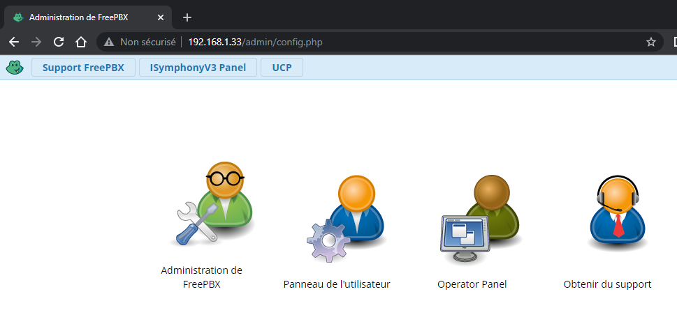
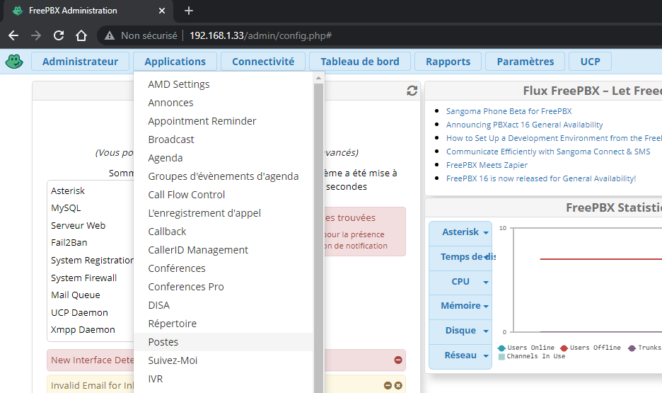
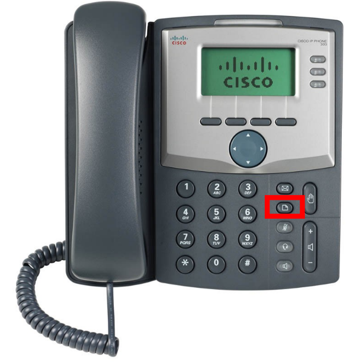
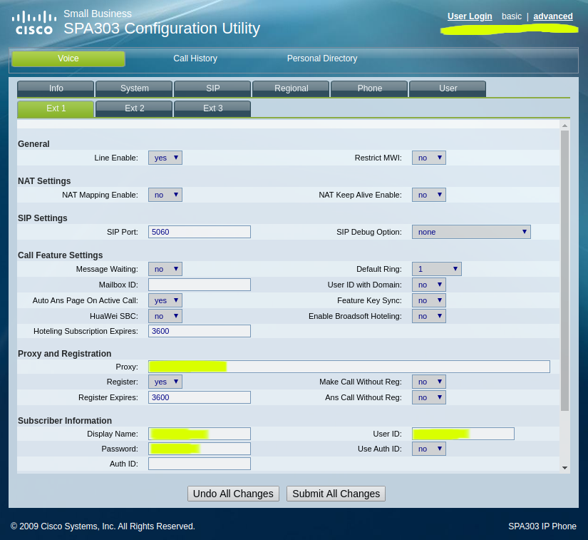
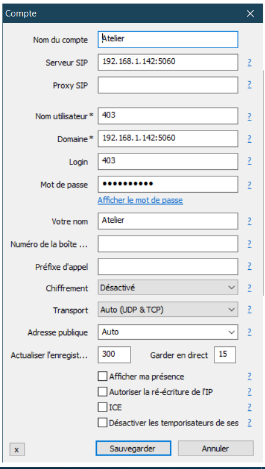
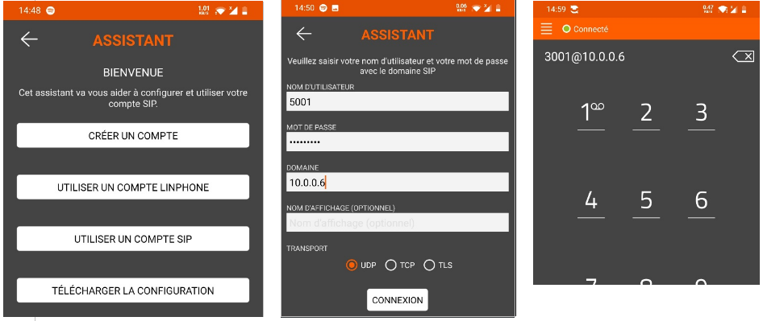

Configuration d'un serveur Téléphonique
Installation existante
Serveur de téléphonie IP
| Serveur | Adresse MAC | login | password | login | password |
|---|---|---|---|---|---|
| CLI | CLI | interface web | interface web | ||
| FreePBX-1 | 1A:EF:51:18:4A:11 | root | Edison2024 | admin | Edison2024++ |
| FreePBX-2 | 1A:EF:51:18:4A:12 | root | Edison2024 | admin | Edison2024++ |
| FreePBX-3 | 1A:EF:51:18:4A:13 | root | Edison2024 | admin | Edison2024++ |
| FreePBX-4 | 1A:EF:51:18:4A:14 | root | Edison2024 | admin | Edison2024++ |
| FreePBX-5 | 1A:EF:51:18:4A:15 | root | Edison2024 | admin | Edison2024++ |
| FreePBX-6 | 1A:EF:51:18:4A:16 | root | Edison2024 | admin | Edison2024++ |
| FreePBX-7 | 1A:EF:51:18:4A:17 | root | Edison2024 | admin | Edison2024++ |
| FreePBX-8 | 1A:EF:51:18:4A:18 | root | Edison2024 | admin | Edison2024++ |
Serveur Proxmox
| Serveur | Adresse MAC | login | password |
|---|---|---|---|
| THULIUM | D0:27:88:8D:28:26 | root | Edison2024 |
| LUTECIUM | 00:01:6C:CF:B7:9D | root | Edison2024 |
| NOBELIUM | 74:27:EA:14:0A:47 | root | Edison2024 |
| FERMIUM | 44:8A:5B:C0:14:CF | root | Edison2024 |
| CALCIUM | 30:D0:42:31:A5:77 | root | Edison2024 |
| HASSIUM | 44:37:E6:EC:5F:0E | root | Edison2024 |
Vous pouvez accéder au cluster en se connectant à l’interface d’un des serveurs : https://ip_du_serveur:8006
Plan adressage du serveur DHCP
| Élément réseau | Plage IP |
|---|---|
| Serveur | 10.0.6.1 - 10.0.6.255 |
| Téléphone IP | 10.100.0.1 - 10.100.1.255 |
| Routeur | 10.50.0.1 - 10.50.1.255 |
| Point d'accès Wifi | 10.0.3.1 – 10.0.3.255 |
| Autres équipements | 10.0.8.1 - 10.0.8.255 |
Accéder au serveur téléphonique
Accédez à la page de configuration du serveur depuis un navigateur en entrant l’adresse IP du serveur dans la barre url d’un navigateur.
* Accédez au menu Admin : « Administration de FreePBX »
* Dans Applications, puis Postes, vous aurez accès à la configuration des postes (extensions en anglais).
 
Réinitialiser un téléphone IP Cisco
Sur le téléphone IP :
• Appuyer sur la touche configuration (feuille cornée)
• Naviguer sur le menu Factoy Reset
• Puis valider le choix
Afficher l’adresse IP d’un téléphone IP Cisco
Sur le téléphone IP :
• Appuyer sur la touche configuration (feuille cornée)
• Naviguer sur le menu Network
Afficher l’adresse MAC d’un téléphone IP Cisco
Sur le téléphone IP :
• Appuyer sur la touche configuration (feuille cornée)
• Naviguer sur le menu Product Info

Configurer un téléphone IP
Accédez à la page de configuration du téléphone depuis un navigateur en entrant l’adresse IP du téléphone dans la barre url d’un navigateur.
• Accédez au menu Admin : « Admin Login »
• Dans Ext1, Adaptez la configuration à votre cas.
◦ Proxy = Adresse IP de votre serveur téléphonique
◦ Display Name = Nom à afficher
◦ User ID = Numéro d’appel
◦ Password = Mot de passe ou “secret”

Transférer un appel
Dans le cas où nous avons au moins 3 postes. Exemple : Accueil, Bureau et Atelier.
Si le poste Atelier veut appeler le Bureau mais ne connait pas le numéro, il peut passer par le poste Accueil où celui-ci pourra transférer l’appel.
Exemple :
• Atelier appelle Accueil,
• Accueil décroche, puis appui sur la touche “xfer” (sous l’écran) et compose le poste à joindre Bureau,
• Pendant ce temps Atelier est en attende,
• Si Bureau accepte l’appel, Accueil appui de nouveau sur “xfer”
À tout moment Accueil peut basculer d’un poste à l’autre en appuyant sur la touche rouge.
La même chose est possible avec la touche “conf”, où les 3 postes peuvent communiquer ensemble.
Asterisk FreePBX Feature Code Reference
Info Services
*69 – Call Trace
# – Directory
*43 – Echo Test
*65 – Speak Your Exten Number
*60 – Speaking Clock
Voicemail
*98 – Dial Voicemail
*97 – My Voicemail
Do-Not-Disturb (DND)
*78 – DND Activate
*79 – DND Deactivate
*76 – DND Toggle
Blacklist
*30 – Blacklist a number
*32 – Blacklist the last caller
*31 – Remove a number from the blacklist
Call Forward
*72 – Call Forward All Activate
*73 – Call Forward All Deactivate
*74 – Call Forward All Prompting Deactivate
*90 – Call Forward Busy Activate
*91 – Call Forward Busy Deactivate
*92 – Call Forward Busy Prompting Deactivate
*52 – Call Forward No Answer/Unavailable Activate
*53 – Call Forward No Answer/Unavailable Deactivate
*740 – Call Forward Toggle
Call Waiting
*70 – Call Waiting – Activate
*71 – Call Waiting – Deactivate
Configuration d'un softphone sur PC : MicroSIP
Nom du compte = Nom à afficher
Serveur SIP = Adresse IP de votre serveur téléphonique : Port SIP (5060)
Exemple : 192.168.1.142:5060
Nom d’utilisateur = Numéro d’appel
Domaine = Adresse IP de votre serveur téléphonique : Port SIP (5060)
Login = Numéro d’appel
Mot de Passe = Mot de passe ou “secret”
Si erreur “Externe”, dans W10 aller dans les paramètres -> Confidentialité -> Microphone, et activer l’autorisation d’autres applications à utiliser le microphone.

Configuration d'un softphone sur téléphone (Android ou IOS) : Linphone
Utiliser un compte SIP :
• Nom d’utilisateur = Numéro d’appel / Numéro de poste
• Password = Mot de passe ou “secret”
• Domaine = Adresse IP de votre serveur téléphonique
• Transport = UDP
Pour réaliser un appel composer « le numéro de poste » @ « IP du serveur téléphonique »
